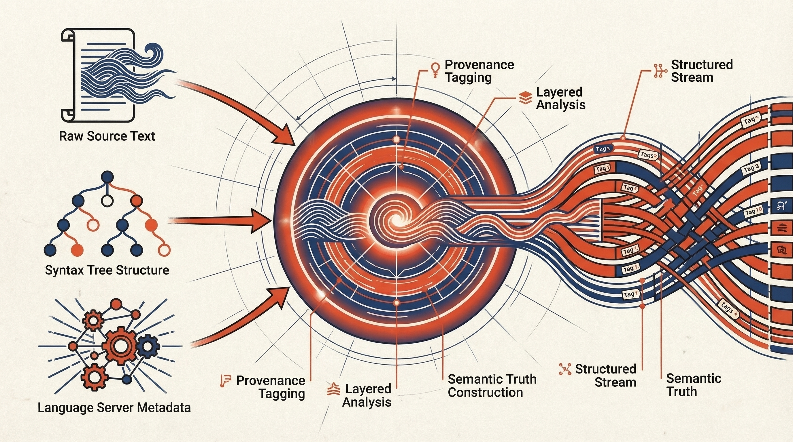

Perception &
Structure.
The observe command is the sensory organ of the Weaver agent. It fuses raw file content with semantic metadata from Tree-sitter and LSP servers to produce a high-fidelity, structured representation of the codebase.
Synopsis
Each observe operation queries code structure and relationships via the daemon. Output is streamed as JSONL (or human-readable when stdout is a TTY).
weaver observe <OPERATION> [ARG ...]
Operations
| Operation | Source | Status | Description |
|---|---|---|---|
| get-definition | LSP | Current | Jump to definition. Requires --uri and --position. |
| find-references | LSP | Current | Find all usages of a symbol. Same flags as get-definition. |
| call-hierarchy | LSP | Current | Incoming/outgoing call graph. Returns nodes and edges. |
| query | Tree-sitter | Current | AST-aware structural query via --pattern and --path. |
| grep | Tree-sitter | Current | Shipped alias of query. Same --pattern and --path contract. |
| get-card | Jacquard | Planned | Structured symbol card (signature, docstring, locals). Progressive detail levels. |
| graph-slice | Jacquard | Planned | Budgeted subgraph rooted at a symbol, with typed edges. |
Integration Examples
1. Jump to Definition
Point at any symbol with a URI and cursor position. Weaver starts the appropriate language server, resolves the definition, and returns the location as structured JSON.
$ weaver observe get-definition \
--uri file:///src/main.rs \
--position 10:5
// definition locations (JSON payload) {"kind":"stream","stream":"stdout", "data":"[{\"uri\":\"file:///src/auth.rs\",\"line\":42,\"column\":17}]\n"} // exit status {"kind":"exit","status":0}
2. Find All References
Same shape, different operation. Finds every call-site, import, and usage of the symbol at the given position — useful for impact analysis before a refactor.
$ weaver observe find-references \
--uri file:///src/auth.rs \
--position 42:17
// reference locations (JSON payload) {"kind":"stream","stream":"stdout", "data":"{\"references\":[{\"uri\":\"file:///src/main.rs\",\"line\":10,\"column\":5},{\"uri\":\"file:///tests/auth_test.rs\",\"line\":7,\"column\":12}]}\n"} // exit status {"kind":"exit","status":0}
Semantic Fusion Engine
How Weaver constructs the "truth" about your code.

Ready to take action?
Now that the agent can see, learn how it manipulates the world.